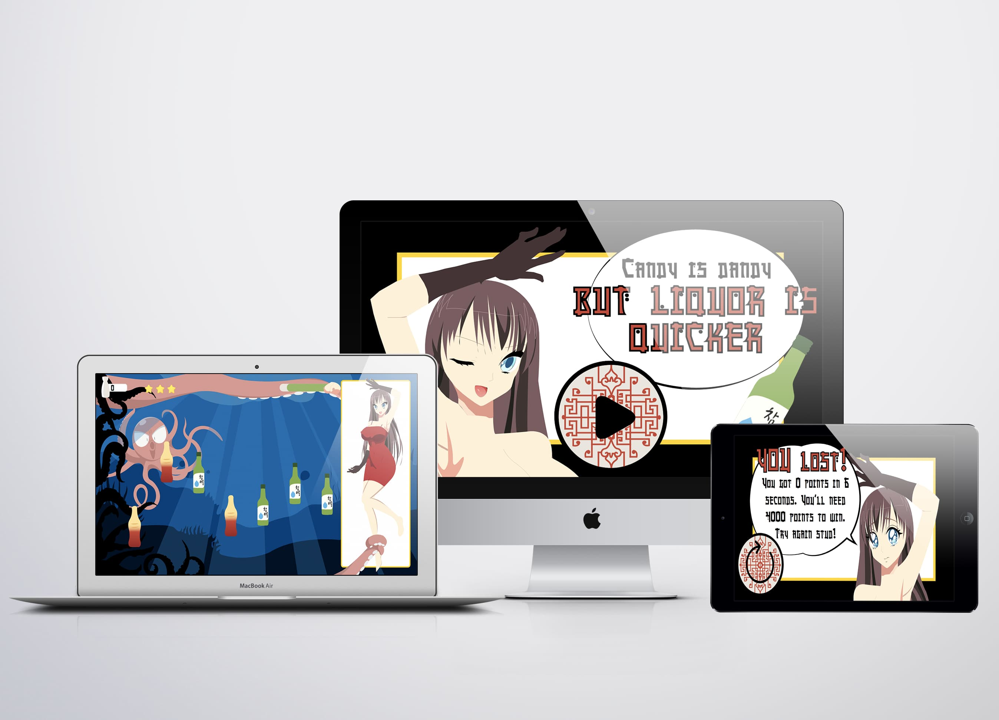

tema 04
animation
Her blev vi introduceret til JavaScript, der bruges til at kode mere avancerede og dynamiske websites, samt interaktive elementer, såsom burgermenu, slideshow osv. Vi lærte at bruge JavaScript ved at udarbejde vores eget spil. Det gjorde vi vha. CSS-animationer, hvor vi påsatte dem via JavaScript. I løbet af vores arbejde med eget spil, lærte vi at arbejde med aktivitets- og statemachine-diagrammer, der bruges til at planlægge det komplicerede interaktive flow i spillet. Vi skulle i dette tema også arbejde særligt meget med formgivning af grafiske elementer i Adobe Illustrator, hvor vi forinden også lærte en del om skitseringsteknikker. Konceptet for mit spil var at afklæde en kvinde hurtigst muligt ved at drikke Jinro.
04.01.05 - Assetliste og designdokumentation
I denne opgave skulle vi på baggrund af UX research, behandling og indsigter fra disse, lave nogle udkast til en idé for at løse casens problemstilling. Emnet for opgaven var at designe en t-shirt shop.
skitser
Under skitsefasen fik jeg lavet et udkast til baggrunden, titelskærmen og spilskærmen med spilelementer.
pitch
Mit spil gik ud på, at man skulle afklæde en kvinde ved at gøre hende fuld i Jinro. Man skal trykke på Jinro flaskerne, der falder ned fra toppen af skærmen, men man skal passe på ikke at trykke på colaflaskerne lavet af slik, der ligeledes falder ned fra toppen af skærmen.
- Ved tryk på Jinro, får man +100 points, ved tryk af colaflaske -100 points.
- Hver gang man opnår x antal point tager kvinden 1 stk. tøj af.
- Hvis en Jinro flaske rammer bunden, så mister man 1 liv.
- Man kan følge med i sine point til venstre for skærmen.
- Spillet er tidsbestemt, så du har 35sek. til at få alt tøjet af.
løbende arbejde
Jeg har i løbet af udviklingen af spillet dokumenteret nogle forskellige stadier af mit grafiske arbejde, så man kan se, hvor jeg startede, og hvor jeg sluttede.

04.05.01 individuelt spil
Vi var nu kommet til det sidste modul i dette tema, og vores endelig spil skulle afleveres. Her ser du et style tile med billeder og tekst, der blev brugt i spillet.
gennemgang af spillet
Her kan du se en gennemgang af spillet, hvor du kan høre lydende, se elementerne og se, hvordan man vinder og hvordan man taber spillet. Hvis du selv vil prøve at spille spillet, kan du trykke på linket øverst på siden.
forbedringer
Hvis jeg skulle videreudvikle på dette spil, ville jeg starte med at ændre fonten til en lidt mere letlæselig font. Så ville jeg endvidere se nærmere på farverne, idet jeg ikke synes, at de valgte komplimenterer hinanden så godt, som det var ønsket.
Da jeg fik feedback på spillet genstartede lydende ikke så snart man havde trykket på et nyt element, hvilket jeg gik ind og fiksede i min JavaScript kode vha. currentTime = 0;, lige efter feedback-samtalen.